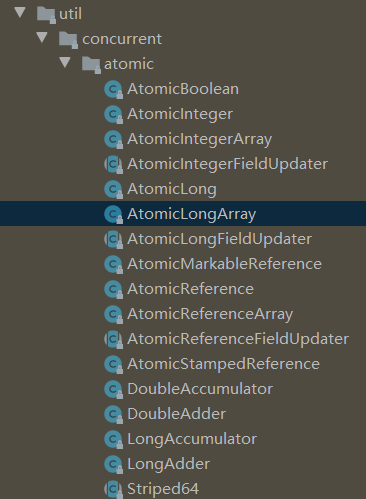

Java并发的书籍断断续续的看了三本：Java并发编程之美，实战Java高并发程序设计，深入浅出Java多线程。看关于线程、进程、volatile、synchronized这些知识点的时候还是觉得非常容易理解的，但是每次看到Atomic、Future、Executor等这些J.U.C工具类就看不明白了，所以就想弄一个框架梳理一下高并发到底在做什么。本文结合Java并发实现原理：JDK源码剖析和深入浅出Java多线程来进行总结。
分为两部分：并发基础（关键字、CAS、AQS）、并发过程中使用的工具类。
并发基础
Thread类和Runnable接口
简介
- 继承
Thread类，并重写run方法； - 实现
Runnable接口的run方法；（主要）
1 | public class Demo { |
1 | public class Demo { |
Thread类的几个常用的方法：
- currentThread()：静态方法，返回对当前正在执行的线程对象的引用；
- start()：开始执行线程的方法，java虚拟机会调用线程内的run()方法；
- yield()：yield在英语里有放弃的意思，同样，这里的yield()指的是当前线程愿意让出对当前处理器的占用。这里需要注意的是，就算当前线程调用了yield()方法，程序在调度的时候，也还有可能继续运行这个线程的；
- sleep()：静态方法，使当前线程睡眠一段时间；
- join()：使当前线程等待另一个线程执行完毕之后再继续执行，内部调用的是Object类的wait方法实现的；
Callable、Future优化接口
通常来说，我们使用Runnable和Thread来创建一个新的线程。但是它们有一个弊端，就是run方法是没有返回值的。而有时候我们希望开启一个线程去执行一个任务，并且这个任务执行完成后有一个返回值。JDK提供了Callable接口与Future接口为我们解决这个问题，这也是所谓的“异步”模型。
Callable与Runnable类似，同样是只有一个抽象方法的函数式接口。不同的是，Callable提供的方法是有返回值的，而且支持泛型。
Callable一般是配合线程池工具ExecutorService来使用的。我们会在后续章节解释线程池的使用。这里只介绍ExecutorService可以使用submit方法来让一个Callable接口执行。它会返回一个Future，我们后续的程序可以通过这个Future的get方法得到结果。
1 | // 自定义Callable |
Future接口只有几个比较简单的方法：
1 | public abstract interface Future<V> { |
为了让任务有能够取消的功能，就使用Callable来代替Runnable。如果为了可取消性而使用 Future但又不提供可用的结果，则可以声明 Future<?>形式类型、并返回 null作为底层任务的结果
Future接口。这个接口有一个实现类叫FutureTask。FutureTask是实现的RunnableFuture接口的，而RunnableFuture接口同时继承了Runnable接口和Future接口：
1 | public interface RunnableFuture<V> extends Runnable, Future<V> { |
Future只是一个接口，而它里面的cancel，get，isDone等方法要自己实现起来都是非常复杂的。所以JDK提供了一个FutureTask类来供我们使用。
1 | // 自定义Callable，与上面一样 |
这里是使用FutureTask直接取get取值，而上面的Demo是通过submit方法返回的Future去取值。
JMM与happen-before
JMM
在Java中，使用的是共享内存并发模型。
在栈中的变量（局部变量、方法定义参数、异常处理器参数）不会在线程之间共享，也就不会有内存可见性（下文会说到）的问题，也不受内存模型的影响。而在堆中的变量是共享的，本文称为共享变量。
- 所有的共享变量都存在主内存中。
- 每个线程都保存了一份该线程使用到的共享变量的副本。
- 如果线程A与线程B之间要通信的话，必须经历下面2个步骤：
- 线程A将本地内存A中更新过的共享变量刷新到主内存中去。
- 线程B到主内存中去读取线程A之前已经更新过的共享变量。
所以，线程A无法直接访问线程B的工作内存，线程间通信必须经过主内存。
注意，根据JMM的规定，线程对共享变量的所有操作都必须在自己的本地内存中进行，不能直接从主内存中读取。
所以线程B并不是直接去主内存中读取共享变量的值，而是先在本地内存B中找到这个共享变量，发现这个共享变量已经被更新了，然后本地内存B去主内存中读取这个共享变量的新值，并拷贝到本地内存B中，最后线程B再读取本地内存B中的新值。
指令重排
指令重排一般分为以下三种：
编译器优化重排
编译器在不改变单线程程序语义的前提下，可以重新安排语句的执行顺序。
指令并行重排
现代处理器采用了指令级并行技术来将多条指令重叠执行。如果不存在数据依赖性(即后一个执行的语句无需依赖前面执行的语句的结果)，处理器可以改变语句对应的机器指令的执行顺序。
内存系统重排
由于处理器使用缓存和读写缓存冲区，这使得加载(load)和存储(store)操作看上去可能是在乱序执行，因为三级缓存的存在，导致内存与缓存的数据同步存在时间差。
第三类就是造成“内存可见性”问题的主因
happen-before
happens-before关系的定义如下：
- 如果一个操作happens-before另一个操作，那么第一个操作的执行结果将对第二个操作可见，而且第一个操作的执行顺序排在第二个操作之前。
- 两个操作之间存在happens-before关系，并不意味着Java平台的具体实现必须要按照happens-before关系指定的顺序来执行。如果重排序之后的执行结果，与按happens-before关系来执行的结果一致，那么JMM也允许这样的重排序。
总之，如果操作A happens-before操作B，那么操作A在内存上所做的操作对操作B都是可见的，不管它们在不在一个线程。
在Java中，有以下天然的happens-before关系：
- 程序顺序规则：一个线程中的每一个操作，happens-before于该线程中的任意后续操作。
- 监视器锁规则：对一个锁的解锁，happens-before于随后对这个锁的加锁。
- volatile变量规则：对一个volatile域的写，happens-before于任意后续对这个volatile域的读。
- 传递性：如果A happens-before B，且B happens-before C，那么A happens-before C。
- start规则：如果线程A执行操作ThreadB.start()启动线程B，那么A线程的ThreadB.start（）操作happens-before于线程B中的任意操作
- join规则：如果线程A执行操作ThreadB.join（）并成功返回，那么线程B中的任意操作happens-before于线程A从ThreadB.join()操作成功返回。
volatile
volatile的三重功效：64位写入的原子性、内存可见性和禁止重排序
在理论层面，可以把基本的CPU内存屏障分成四种：（1）LoadLoad：禁止读和读的重排序。（2）StoreStore：禁止写和写的重排序。（3）LoadStore：禁止读和写的重排序。（4）StoreLoad：禁止写和读的重排序。
实现volatile关键字的语义的一种参考做法：
（1）在volatile写操作的前面插入一个StoreStore屏障。保证volatile写操作不会和之前的写操作重排序。
（2）在volatile写操作的后面插入一个StoreLoad屏障。保证volatile写操作不会和之后的读操作重排序。
（3）在volatile读操作的后面插入一个LoadLoad屏障+LoadStore屏障。保证volatile读操作不会和之后的读操作、写操作重排序
在保证内存可见性这一点上，volatile有着与锁相同的内存语义，所以可以作为一个“轻量级”的锁来使用。但由于volatile仅仅保证对单个volatile变量的读/写具有原子性，而锁可以保证整个临界区代码的执行具有原子性。所以在功能上，锁比volatile更强大；在性能上，volatile更有优势。
Synchronized
简介
我们通常使用synchronized关键字来给一段代码或一个方法上锁。它通常有以下三种形式：
1 | // 关键字在实例方法上，锁为当前实例 |
我们这里介绍一下“临界区”的概念。所谓“临界区”，指的是某一块代码区域，它同一时刻只能由一个线程执行。在上面的例子中，如果synchronized关键字在方法上，那临界区就是整个方法内部。而如果是使用synchronized代码块，那临界区就指的是代码块内部的区域。
同理，下面这两个方法也应该是等价的：
1 | // 关键字在静态方法上，锁为当前Class对象 |
锁
一个对象其实有四种锁状态，它们级别由低到高依次是：
- 无锁状态
- 偏向锁状态
- 轻量级锁状态
- 重量级锁状态
每个Java对象都有对象头。如果是非数组类型，则用2个字宽来存储对象头，如果是数组，则会用3个字宽来存储对象头。在32位处理器中，一个字宽是32位；在64位虚拟机中，一个字宽是64位。对象头的内容如下表：
| 长度 | 内容 | 说明 |
|---|---|---|
| 32/64bit | Mark Word | 存储对象的hashCode或锁信息等 |
| 32/64bit | Class Metadata Address | 存储到对象类型数据的指针 |
| 32/64bit | Array length | 数组的长度（如果是数组） |
我们主要来看看Mark Word的格式：
| 锁状态 | 29 bit 或 61 bit | 1 bit 是否是偏向锁？ | 2 bit 锁标志位 |
|---|---|---|---|
| 无锁 | 0 | 01 | |
| 偏向锁 | 线程ID | 1 | 01 |
| 轻量级锁 | 指向栈中锁记录的指针 | 此时这一位不用于标识偏向锁 | 00 |
| 重量级锁 | 指向互斥量（重量级锁）的指针 | 此时这一位不用于标识偏向锁 | 10 |
| GC标记 | 此时这一位不用于标识偏向锁 | 11 |
可以看到，当对象状态为偏向锁时，Mark Word存储的是偏向的线程ID；当状态为轻量级锁时，Mark Word存储的是指向线程栈中Lock Record的指针；当状态为重量级锁时，Mark Word为指向堆中的monitor对象的指针。
偏向锁
偏向锁会偏向于第一个访问锁的线程，如果在接下来的运行过程中，该锁没有被其他的线程访问，则持有偏向锁的线程将永远不需要触发同步。也就是说，偏向锁在资源无竞争情况下消除了同步语句，连CAS操作都不做了，提高了程序的运行性能。
大白话就是对锁置个变量，如果发现为true，代表资源无竞争，则无需再走各种加锁/解锁流程。如果为false，代表存在其他线程竞争资源，那么就会走后面的流程。
一个线程在第一次进入同步块时，会在对象头和栈帧中的锁记录里存储锁的偏向的线程ID。当下次该线程进入这个同步块时，会去检查锁的Mark Word里面是不是放的自己的线程ID。
如果是，表明该线程已经获得了锁，以后该线程在进入和退出同步块时不需要花费CAS操作来加锁和解锁 ；如果不是，就代表有另一个线程来竞争这个偏向锁。这个时候会尝试使用CAS来替换Mark Word里面的线程ID为新线程的ID，这个时候要分两种情况：
- 成功，表示之前的线程不存在了， Mark Word里面的线程ID为新线程的ID，锁不会升级，仍然为偏向锁；
- 失败，表示之前的线程仍然存在，那么暂停之前的线程，设置偏向锁标识为0，并设置锁标志位为00，升级为轻量级锁，会按照轻量级锁的方式进行竞争锁。
偏向锁使用了一种等到竞争出现才释放锁的机制，所以当其他线程尝试竞争偏向锁时， 持有偏向锁的线程才会释放锁。
偏向锁升级成轻量级锁时，会暂停拥有偏向锁的线程，重置偏向锁标识，这个过程看起来容易，实则开销还是很大的，大概的过程如下：
- 在一个安全点（在这个时间点上没有字节码正在执行）停止拥有锁的线程。
- 遍历线程栈，如果存在锁记录的话，需要修复锁记录和Mark Word，使其变成无锁状态。
- 唤醒被停止的线程，将当前锁升级成轻量级锁。
轻量锁
多个线程在不同时段获取同一把锁，即不存在锁竞争的情况，也就没有线程阻塞。针对这种情况，JVM采用轻量级锁来避免线程的阻塞与唤醒。
JVM会为每个线程在当前线程的栈帧中创建用于存储锁记录的空间，我们称为Displaced Mark Word。如果一个线程获得锁的时候发现是轻量级锁，会把锁的Mark Word复制到自己的Displaced Mark Word里面。
然后线程尝试用CAS将锁的Mark Word替换为指向锁记录的指针。如果成功，当前线程获得锁，如果失败，表示Mark Word已经被替换成了其他线程的锁记录，说明在与其它线程竞争锁，当前线程就尝试使用自旋来获取锁。
自旋也不是一直进行下去的，如果自旋到一定程度（和JVM、操作系统相关），依然没有获取到锁，称为自旋失败，那么这个线程会阻塞。同时这个锁就会升级成重量级锁。
在释放锁时，当前线程会使用CAS操作将Displaced Mark Word的内容复制回锁的Mark Word里面。如果没有发生竞争，那么这个复制的操作会成功。如果有其他线程因为自旋多次导致轻量级锁升级成了重量级锁，那么CAS操作会失败，此时会释放锁并唤醒被阻塞的线程。
重量级锁
重量级锁依赖于操作系统的互斥量（mutex） 实现的，而操作系统中线程间状态的转换需要相对比较长的时间，所以重量级锁效率很低，但被阻塞的线程不会消耗CPU。
锁升级流程
每一个线程在准备获取共享资源时： 第一步，检查MarkWord里面是不是放的自己的ThreadId ,如果是，表示当前线程是处于 “偏向锁” 。
第二步，如果MarkWord不是自己的ThreadId，锁升级，这时候，用CAS来执行切换，新的线程根据MarkWord里面现有的ThreadId，通知之前线程暂停，之前线程将Markword的内容置为空。
第三步，两个线程都把锁对象的HashCode复制到自己新建的用于存储锁的记录空间，接着开始通过CAS操作， 把锁对象的MarKword的内容修改为自己新建的记录空间的地址的方式竞争MarkWord。
第四步，第三步中成功执行CAS的获得资源，失败的则进入自旋 。
第五步，自旋的线程在自旋过程中，成功获得资源(即之前获的资源的线程执行完成并释放了共享资源)，则整个状态依然处于 轻量级锁的状态，如果自旋失败 。
第六步，进入重量级锁的状态，这个时候，自旋的线程进行阻塞，等待之前线程执行完成并唤醒自己。
下表来自《Java并发编程的艺术》：
| 锁 | 优点 | 缺点 | 适用场景 |
|---|---|---|---|
| 偏向锁 | 加锁和解锁不需要额外的消耗，和执行非同步方法比仅存在纳秒级的差距。 | 如果线程间存在锁竞争，会带来额外的锁撤销的消耗。 | 适用于只有一个线程访问同步块场景。 |
| 轻量级锁 | 竞争的线程不会阻塞，提高了程序的响应速度。 | 如果始终得不到锁竞争的线程使用自旋会消耗CPU。 | 追求响应时间。同步块执行速度非常快。 |
| 重量级锁 | 线程竞争不使用自旋，不会消耗CPU。 | 线程阻塞，响应时间缓慢。 | 追求吞吐量。同步块执行时间较长。 |
乐观锁与悲观锁
乐观锁多用于“读多写少“的环境，避免频繁加锁影响性能；而悲观锁多用于”写多读少“的环境，避免频繁失败和重试影响性能。
CAS的全称是：比较并交换（Compare And Swap）。在CAS中，有这样三个值：
- V：要更新的变量(var)
- E：预期值(expected)—旧值
- N：新值(new)
比较并交换的过程如下：
判断V是否等于E，如果等于，将V的值设置为N；如果不等，说明已经有其它线程更新了V，则当前线程放弃更新，什么都不做。
CAS是一种原子操作，当多个线程同时使用CAS操作一个变量时，只有一个会胜出，并成功更新，其余均会失败，但失败的线程并不会被挂起，仅是被告知失败，并且允许再次尝试，当然也允许失败的线程放弃操作。
并发高级
Atomic类

这些类大概的用途：
- 原子更新基本类型
- 原子更新数组
- 原子更新引用
- 原子更新字段（属性）
示例
这里我们以AtomicInteger类的getAndAdd(int delta)方法为例，来看看Java是如何实现原子操作的。
先看看这个方法的源码：
1 | public final int getAndAdd(int delta) { |
这里的U其实就是一个Unsafe对象：
1 | private static final jdk.internal.misc.Unsafe U = jdk.internal.misc.Unsafe.getUnsafe(); |
所以其实AtomicInteger类的getAndAdd(int delta)方法是调用Unsafe类的方法来实现的：
1 |
|
首先，对象o是this，也就是一个AtomicInteger对象。然后offset是一个常量VALUE。这个常量是在AtomicInteger类中声明的：
1 | private static final long VALUE = U.objectFieldOffset(AtomicInteger.class, "value"); |
同样是调用的Unsafe的方法。从方法名字上来看，是得到了一个对象字段偏移量。
这里声明了一个v，也就是要返回的值。从getAndAddInt来看，它返回的应该是原来的值，而新的值的v + delta。
这里使用的是do-while循环。这种循环不多见，它的目的是保证循环体内的语句至少会被执行一遍。这样才能保证return 的值v是我们期望的值。
简单来说，weakCompareAndSet操作仅保留了volatile自身变量的特性，而除去了happens-before规则带来的内存语义。也就是说，weakCompareAndSet无法保证处理操作目标的volatile变量外的其他变量的执行顺序( 编译器和处理器为了优化程序性能而对指令序列进行重新排序 )，同时也无法保证这些变量的可见性。这在一定程度上可以提高性能。
ABA问题
到目前为止，CAS都是基于“值”来做比较的。但如果另外一个线程把变量的值从A改为B，再从B改回到A，那么尽管修改过两次，可是在当前线程做CAS操作的时候，却会因为值没变而认为数据没有被其他线程修改过，这就是所谓的ABA问题。要解决ABA 问题，不仅要比较“值”，还要比较“版本号”，而这正是AtomicStamped-Reference做的事情
之前的CAS只有两个参数，这里的CAS有四个参数，后两个参数就是版本号的旧值和新值。当expectedReference！=对象当前的reference时，说明该数据肯定被其他线程修改过；当expectedReference==对象当前的reference时，再进一步比较expectedStamp是否等于对象当前的版本号，以此判断数据是否被其他线程修改过。
AtomicMarkableReference与AtomicStampedReference原理类似，只是Pair里面的版本号是boolean类型的，而不是整型的累加变量
AtomicXXXFieldUpdater
为什么需要AtomicXXXFieldUpdater
如果一个类是自己编写的，则可以在编写的时候把成员变量定义为Atomic类型。但如果是一个已经有的类，在不能更改其源代码的情况下，要想实现对其成员变量的原子操作，就需要AtomicIntegerFieldUpdater、AtomicLongFieldUpdater和AtomicReferenceFieldUpdater。
1 | public static <U> AtomicIntegerFieldUpdater<U> newUpdater(Class<U> tclass, |
newUpdater（..）静态函数传入的是要修改的类（不是对象）和对应的成员变量的名字
要想使用AtomicIntegerFieldUpdater修改成员变量，成员变量必须是volatile的int类型（不能是Integer包装类）
数组操作
Concurrent包提供了AtomicIntegerArray、AtomicLongArray、AtomicReferenceArray三个数组元素的原子操作。注意，这里并不是说对整个数组的操作是原子的，而是针对数组中一个元素的原子操作而言。
AQS
ch11
锁与条件
ch14
同步工具
ch17
并发容器
ch13,ch16,ch15
线程池、Future
ch12
ForkJoinPool
ch18